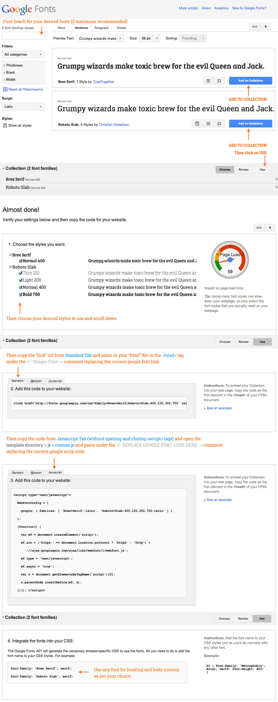
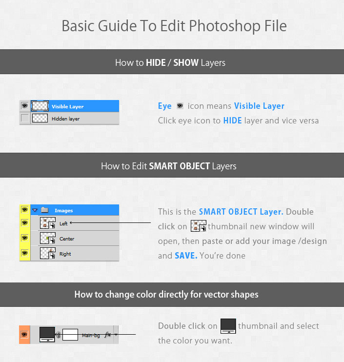

What is this?
This documentation is created to help/assist in the customization of the html template offered in this download. I've tried to cover all the points that I could think of that'll help you. If you have more questions or issues regarding this template, please send me a message through my ThemeForest Profile Page and I'll try to get in touch with you as soon as possible. Certain modifications may need extra work that'll be charged for an extra fee depending on the task and the time that'll be required to do the work.
Thank You for downloading this template. I hope you like it :) and Do Not Forget to rate this file which I will accept as a token of appreciation!
Features
- One Page Template
- HTML 5 & CSS3
- jQuery/AJAX
- Twitter Bootstrap 3 Framework
- Responsive Layout
- Smooth Page Scrolling
- Font Awesome icons + Glyphicons from Bootstrap3
- Working Simple Ajax Contact Form (Get details on your email)
- Working Subscribe form (get details on your email)
- Modern Browsers Compliant
- Easy to Work with.
- PSD included
Slider settings
Changing Slideshow speed:
- Normal Menu: Main Slider: open master.js (js > master.js), line number 39, "Play : 7000,"
- Normal Menu: Testimonial Slider: open master.js (js > master.js), line number 83, "interval:8000" change interval value to set speed of slideshow.
- Off Canvas Menu: Main Slider: open master.js (js > master.js), line number 39, "interval : 7000,"
- Off Canvas Menu: Testimonial Slider: open master.js (js > master.js), line number 100, "interval:8000" change interval value to set speed of slideshow.
Changing Slideshow texture:
Open style.css and change image name from opaqueBG.png to body-bg1.png up to body-bg6.png
- Normal Menu: Line no 695
- Off canvas Menu: Line no 715
How To set Counter Date?
Go to /js directory and open master.js, find code at line no: 44 (Normal Menu layout) or 62 (Canvas menu layout) and change date and time
// Counter
var endDate = "June 7, 2015 15:00:00";
OWL Carousel setting
You can find all options for setting here : Click here
Changing special guest image
You just have to take 1000px x 800px size jpg image and replace in img folder with name special_guest.jpg
Changing Color Scheme of your website is very easy
If you want some different color scheme then open color.css
- There are sections for colors and background-colors used in template.
- We have placed all classes affected by color scheme here. So you can change colors here directly
- You have to use hex codes but some places you need to use rgba values of respective color (hex to rgba converter: Click here)
Contact Form Options
Contact Email Setting Options
You can edit following options in the Contact form. Go to template directory > Form and open Contact.php Under EDITABLE OPTIONS set the following:
- $receiving_email_address: This is the email address where you want to receive emails submitted via Contact form.
- $receiving_email_address_name: This is the name i.e. associated with your email address account.
- $custom_subject: This is the subject line for the requests submitted via Contact form.
Contact Success Message Options:
In this section you can edit following: Go to template directory > js and open custom.js Under Contact FORM set the following:- submitMessage: - This is the success title to display after submitting the form successfully.
- successParagraph: - This is the message to display after submitting the form successfully.
- successBoxColor: - This is the color of the success message box after submitting the form successfully.
- successBoxBorderStyle: - The border style of the success message box i.e. Dashed, Solid, Dotted, Double
- successBox_Border_Color: - This is the Border color of the success message box.
- textColor: - This is the text color of the success message.
Subscribe Email Setting Options
You can edit following options in the Subscribe form. Go to template directory > Form and open subscribe.php Under EDITABLE OPTIONS set the following:
- $receiving_email_address: This is the email address where you want to receive emails submitted via Contact form.
- $custom_subject: This is the subject line for the requests submitted via Contact form.
Subscribe Success Message Options:
In this section you can edit following: Go to template directory > js and open custom.js Under SUBSCRIBE FORM set the following:- var sub_submitMessage: - This is the success title to display after submitting the form successfully.
- var sub_successBoxColor: - This is the color of the success message box after submitting the form successfully.
- var sub_successBoxBorderStyle: - The border style of the success message box i.e. Dashed, Solid, Dotted, Double
- var sub_successBox_Border_Color: - This is the Border color of the success message box.
- var sub_textColor: - This is the text color of the success message.
How To Use Google Web Font?
There are two important code snippets you need to replace the google font for your website. Please follow the steps below.
- Go To: Google Web Fonts
- Follow these steps:
 - Then open style.css and change font name on line 36, 51 and 62
Changing google map address
- open direction.js
- Go to Line 4 and 35
- change co-ordinates related to your address i.e 37.791649,-122.394395 - Latitude, Longitude respectively
- Dont know your co-ordinates? Click here and check for your address
Using Font Awesome
Font Awesome gives you more than 300 scalable vector icons.
Guideline for image sizes:
- Company Logo:
- Normal Menu: 184(w) x 62(H) px (recommended)
- Off Canvas Menu: 200(w) x 100(H) px (recommended)
- Images for Main Slider: 1200 x 675 px Min (Ratio: 16:9)
- Artist: 250px x 350px
- Special : 1000px x 800px
- Lineup : 400px x 400px
- About Us Image : 725px x 500px
Add Favicon and Apple Icons
We have provided seperate PSD for favicon and apple icons
- Apple Icons: Create images (png) for icons using PSD and upload/replace in img > icons
- Favicon: Ther are lots of ways to generate favicon on internet or using photoshop but I always prefer and use click here
Create 100x100px image using PSD and follow instructions on website, then replace favicon.ico in img > icons
PSD Included
Following PSDS are given in Download file
- PSD for both layout
- Favicon and Apple icon
- Main Slider, Special Guest, LineUp, Artist and About Us just for size reference only.
Below is the basic smart object editing in Photoshop. You can follow the same process for working with Smart Objects in Photoshop.

AND You're DONE!
Credits/Attributions
Thanks so much to
- Twitter Bootstrap 3
- jQuery By jQuery Foundation, Inc.
- Picjumbo
- superslide
- owlcarousel
- Pixel Perfect Icons By: FontAwesome
- Free Google Web Font: Oswald and Raleway
- Images by Placeholders.js
- Countdown Script By CoffeeScript
THANK YOU FOR PURCHASING THIS template.
I hope you enjoyed working with this template. Please feel free to ask for any queries/questions you may have using a message button.